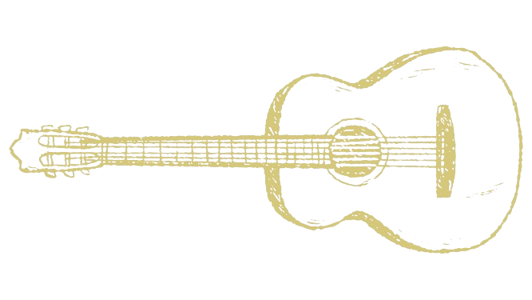

Adrianne Lenker
Musicista
Nascida em Indianapolis e criada em um culto cristão até os 4 anos de idade. É a vocalista, guitarrista e principal escritora da banda Big Thief, como também, uma estabelecida artista solo.
Formação
Berklee College of Music
Discografia
Habilidades
- Guitarra
- Violão
- Canto
- Composição
Nominações Grammy Awards
- U.F.O.F. Nominado a melhor álbum de música alternativa.
- "Not" Nominado a melhor música de rock.
- "Not" Nominado a melhor performance de rock.
- "Certainty" Nominado a melhor performance de música alternativa.
- Dragon New Warm Mountain I Believe in You Nominado a melhor álbum de música alternativa.